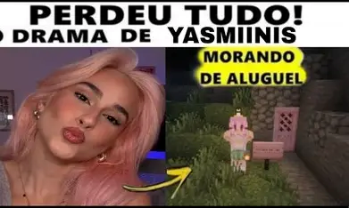

Você sabia?
Alem das lives
Segredos do mundo das lives
Das streams às telas, nossas streamers construiram uma história de mudanças e momentos marcantes.

Arquivo histórico * Twitch
01
A Twitch surgiu em 2011
A Twitch foi lançada em 2011, com foco para ser uma plataforma de transmissão ao vivo de jogos.
02
A Amazon comprou a Twitch
Em 2014, a Amazon anunciou a compra da Twitch por cerca de US$ 970 milhões.
03
A Twitch não é só sobre jogos
Apesar de ficar famosa pelas lives de games, a Twitch também possui conteúdos de música, artes, conversas, esportes e muito mais.